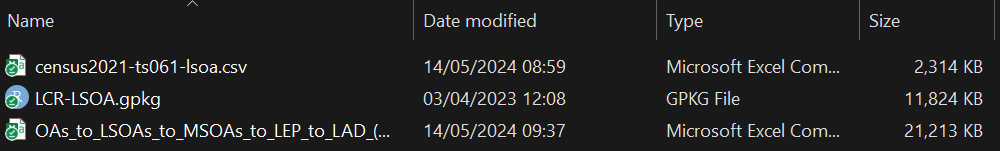
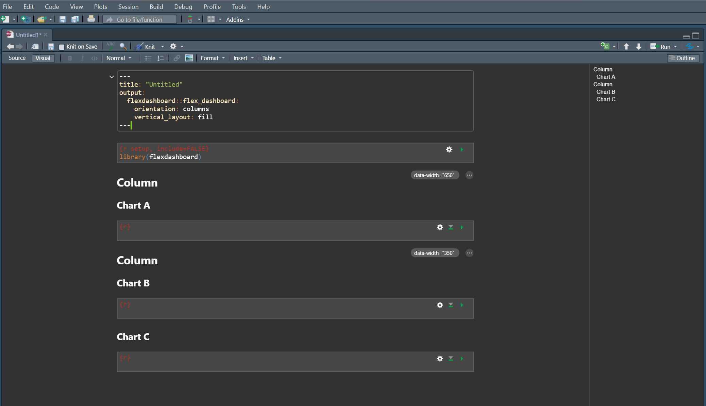
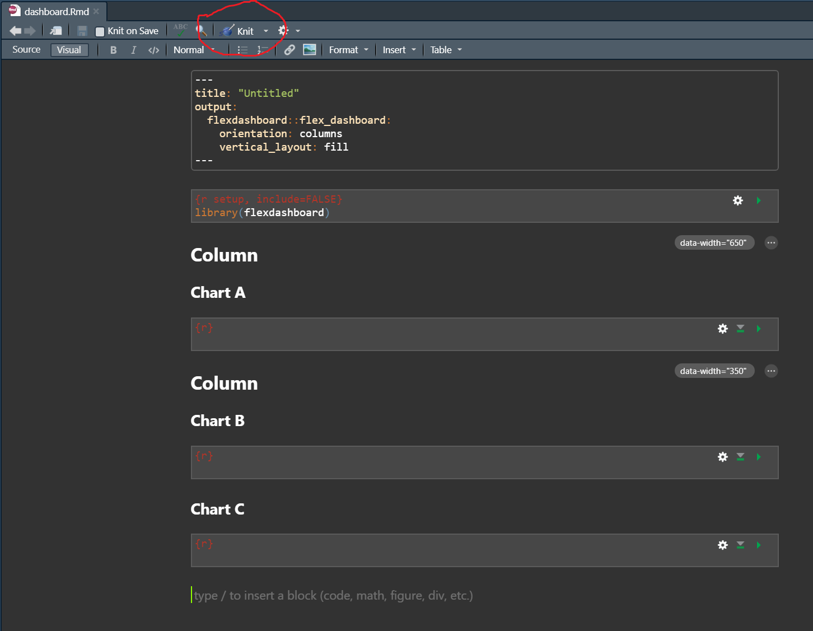
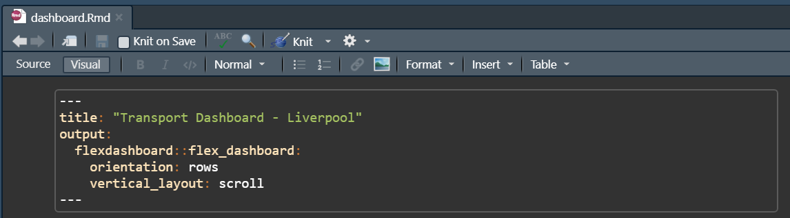
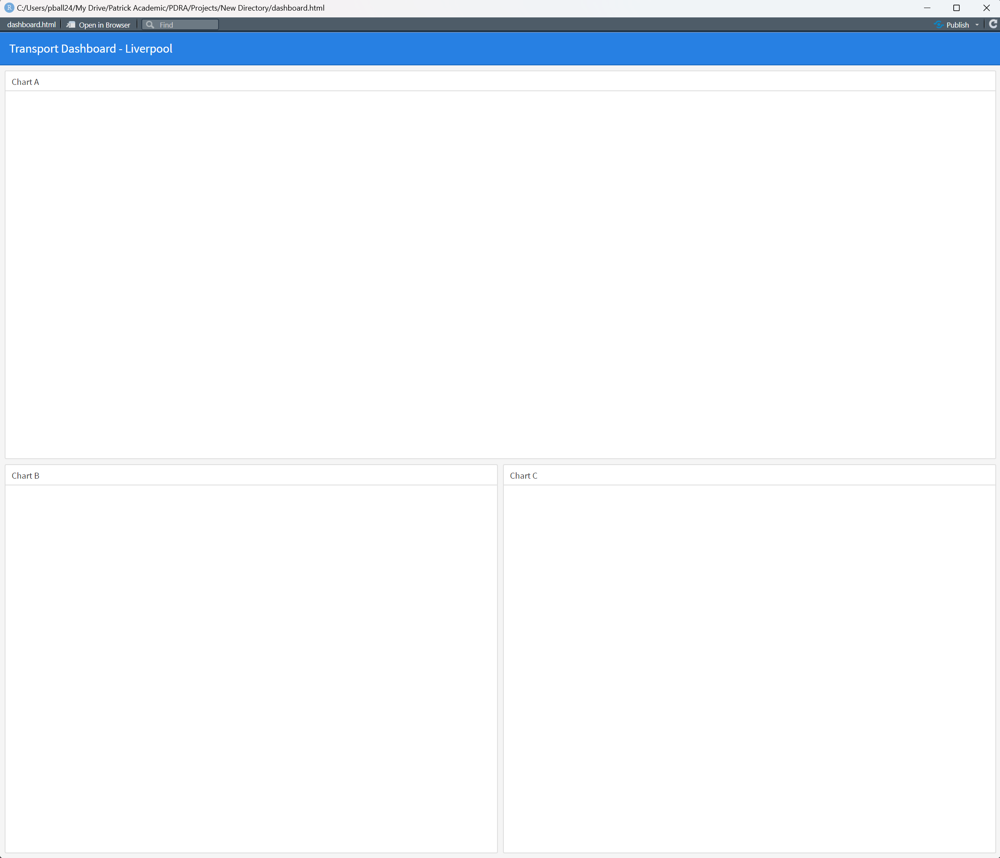
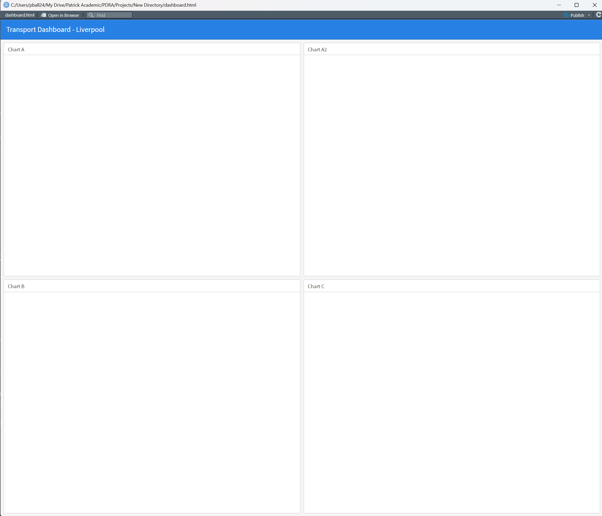
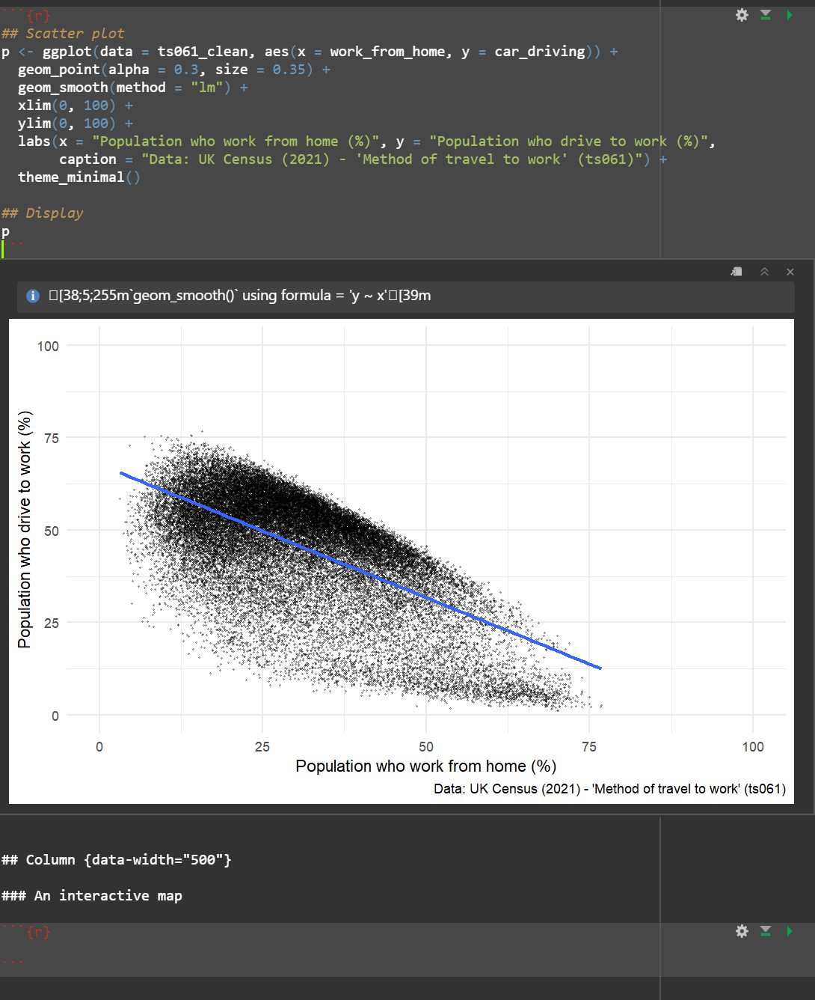
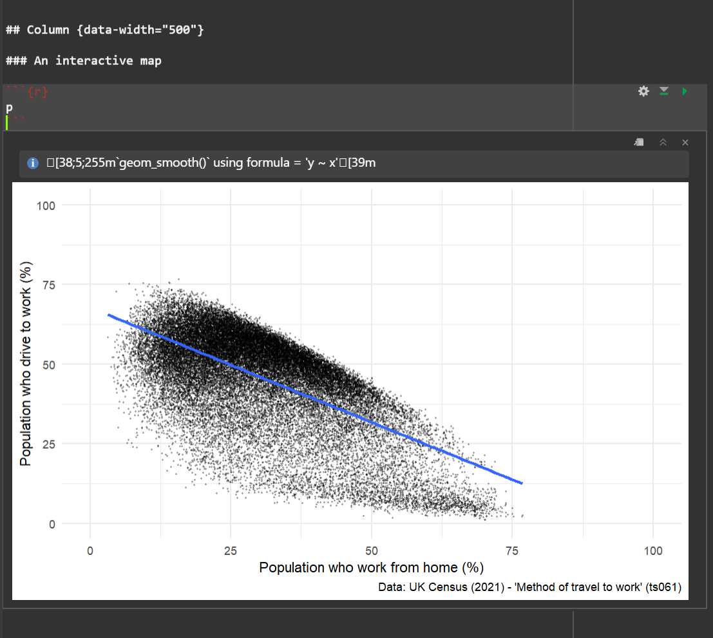

url <- "https://www.nomisweb.co.uk/output/census/2021/census2021-ts061.zip"
url[1] "https://www.nomisweb.co.uk/output/census/2021/census2021-ts061.zip"By the end of today’s session you should be able to:
Web services make their data easily accessible to computer programs like R through use of an Application Programming Interface (API). Today’s practical will teach you how to access data from APIs, and load them into your R environment for analysis.
To download data from an API you need to send a HTTP request to a server, which tells the server to return the specific parcel of data that matches the criteria in the HTTP request.
For example, on NOMIS there is a page called ‘Census 2021 Bulk Data Download’, which contains .zip files for different tables of data available from the latest census.
Now you should go to the ‘Census 2021 Bulk Data Download’ page, and see what it contains.

There are lots of files on the web page - e.g. census2021-ts001.zip, census2021-ts007a.zip.
You can click on these files individually, download them to your PC, unzip them and read them into R. Alternatively, we can programmatically download the data directly from the webpage. If you ‘right click’ on one of the .zip files and press ‘copy link’, you will have a URL which can access that specific .zip file, as below:
url <- "https://www.nomisweb.co.uk/output/census/2021/census2021-ts061.zip"
url[1] "https://www.nomisweb.co.uk/output/census/2021/census2021-ts061.zip"The specific URL above relates to table TS061 - “Method of Travel to Work”, which is the same dataset we have been using throughout this course.
Now I’m going to show you how to download the .zip file, and read in the file of data we used yesterday. This is a really basic example of using an API, which shows how you can download data from NOMIS into your environment, without having to physically go and download it, save it to a folder, unzip it and read it into memory.
First, let’s download the .zip file - this line of code downloads the .zip file to your local machine. It creates a new file in your working directory called ‘temp.zip’ - go and take a look!
## Download the .zip file, using the url set above
download.file(url, "temp.zip")Next we need to unzip the folder, to get to the datasets stored within:
## First set where you want the unzipped files to be stored
outDir <- "data/unzip"
## Unzip the folder to the data/unzip folder
unzip("temp.zip", exdir = outDir)Ok so now that you’ve downloaded the files to your local machine, we can look and see what files are available to us:
## Use list.files() to see what we unzipped
list.files("data/unzip")[1] "census2021-ts061-ctry.csv" "census2021-ts061-lsoa.csv"
[3] "census2021-ts061-ltla.csv" "census2021-ts061-msoa.csv"
[5] "census2021-ts061-oa.csv" "census2021-ts061-rgn.csv"
[7] "census2021-ts061-utla.csv" "metadata" Thankfully, NOMIS use a really standard naming protocol for their files, which makes it really easy to tell what each of the files contains. If you cast your mind back to yesterday, we used a file called “census2021-ts061-lsoa.csv”, which we provided to you as part of the course materials. However, as you can see from the code above, you have now programmatically downloaded the same file, which we can read in:
## Read in the LSOA census data
db <- read.csv("data/unzip/census2021-ts061-lsoa.csv")Solution 2
## Set the new URL
url2 <- "https://www.nomisweb.co.uk/output/census/2021/census2021-ts066.zip"
## Download the files
download.file(url2, "temp2.zip")
## Unzip the files
outDir2 <- "data/unzip2"
## Unzip the folder to the data/unzip folder
unzip("temp2.zip", exdir = outDir2)
## Read in the LSOA census data
db2 <- read.csv("data/unzip2/census2021-ts066-lsoa.csv")
## Select some columns to work with, and calculate % student
db2_clean <- db2 %>%
select(geography.code, Economic.activity.status..Total..All.usual.residents.aged.16.years.and.over, Economic.activity.status..Economically.inactive..Student) %>%
setNames(c("LSOA21CD", "total", "student")) %>%
mutate(student = (student / total) * 100)Solution 3
## Produce a histogram
ggplot(data = db2_clean, aes(x = student)) +
geom_density(fill = "orange") +
labs(x = "Population who are students (%)", y = "Number of LSOAs",
caption = "Data: UK Census (2021) - 'Economic Activity Status' (ts066)") +
theme_minimal()
So what have we achieved?
But what if you want to automate this download in a much quicker manner. The NOMIS API is a good way of doing this (and we’ll be discussing this shortly), but the other way you can do this is through the use of functions.
Functions are “self contained modules of code that accomplish a specific task”. They normally take data in soem form, perform a number of modifications to it, and then return some form of result.
The basic syntax of a function is as follows:
## Specify a new function
function1 <- function(x) {
}There are three important things to notice here:
function1) - enables you to call the function at a later point.function(x)) - is the input data or parameter that you are going to be using.{}) - anything within the curly brackets will be a series of steps that are applied.So a basic example is we can ask the function to return the first five rows of x:
## Specify a new function - first five
firstfive <- function(x) {
head(x)
}Now you need to run the function on an object - let’s do it on our census dataset:
## Apply the function
firstfive(db) date geography geography.code
1 2021 City of London 001A E01000001
2 2021 City of London 001B E01000002
3 2021 City of London 001C E01000003
4 2021 City of London 001E E01000005
5 2021 Barking and Dagenham 016A E01000006
6 2021 Barking and Dagenham 015A E01000007
Method.of.travel.to.workplace..Total..All.usual.residents.aged.16.years.and.over.in.employment.the.week.before.the.census
1 866
2 881
3 1000
4 496
5 888
6 1385
Method.of.travel.to.workplace..Work.mainly.at.or.from.home
1 639
2 676
3 618
4 203
5 192
6 370
Method.of.travel.to.workplace..Underground..metro..light.rail..tram
1 35
2 31
3 74
4 69
5 205
6 358
Method.of.travel.to.workplace..Train
1 17
2 10
3 21
4 25
5 104
6 177
Method.of.travel.to.workplace..Bus..minibus.or.coach
1 13
2 15
3 26
4 44
5 60
6 117
Method.of.travel.to.workplace..Taxi
1 4
2 2
3 4
4 2
5 1
6 8
Method.of.travel.to.workplace..Motorcycle..scooter.or.moped
1 3
2 1
3 4
4 3
5 5
6 3
Method.of.travel.to.workplace..Driving.a.car.or.van
1 18
2 19
3 24
4 33
5 227
6 220
Method.of.travel.to.workplace..Passenger.in.a.car.or.van
1 0
2 3
3 7
4 1
5 10
6 21
Method.of.travel.to.workplace..Bicycle Method.of.travel.to.workplace..On.foot
1 24 109
2 25 92
3 62 143
4 18 90
5 6 61
6 21 71
Method.of.travel.to.workplace..Other.method.of.travel.to.work
1 4
2 7
3 17
4 8
5 17
6 19So, that’s a really basic example of how to use a function.
Let me show you how functions can be used to clean datasets programmatically:
However, there is one easier way of getting the data from NOMIS, and this involves use of the NOMIS API.
One of the things that you see more commonly in practice is the construction of specific R packages used to access APIs, with supporting documentation and specific functions that make it easier to use the API.
One such example is nomisr, which is an R package that was built to enable users to query data from NOMIS. It is free to access and contains up-to-date official statistics including data from the latest Census, Labour Force Survey and DWP benefit statistics.
In the section that follows, I’m going to be showing you how to use the nomisr package to download datasets.
Vast amounts of data are available through NOMIS, so you need to use some of the different functions within nomisr to identify the specific datasets you want to use. An example is presented below which searches for datasets within NOMIS that are specifically about ‘Travel’:
## Search for data on Labour Force
search <- nomis_search("*Travel*")This returns a dataframe (which you should see in your environment) that describes all of the different NOMIS held datasets where ‘Travel’ is mentioned. The column perhaps of most interest is the short name for the different datasets, which you can inspect below:
## Have a look at the first six datasets
head(search$name.value)[1] "2001 census - UK travel flows (local authority)"
[2] "2001 census - Scottish travel flows (local authority)"
[3] "2001 census - UK travel flows (ward)"
[4] "QS702EW - Distance travelled to work"
[5] "WD702EW - Distance travelled to work (Workday population)"
[6] "WP702EW - Distance travelled to work (Workplace population)"If you open up the dataframe in your environment and scroll down you should see one row has the value - TS061 - Method used to travel to work - which is the one we’ve been using a lot in this practical.
We can filter to this row very easily using the filter() command that we introduced yesterday:
## Filter to row of interest
search_sub <- search %>%
filter(name.value == "TS061 - Method used to travel to work")
## Have a look at the result
search_sub# A tibble: 1 × 12
agencyid id uri version annot…¹ compo…² compo…³ compo…⁴ compo…⁵ compo…⁶
<chr> <chr> <chr> <dbl> <list> <list> <list> <chr> <chr> <chr>
1 NOMIS NM_207… Nm-2… 1 <df> <df> <df> OBS_VA… CL_207… TIME
# … with 2 more variables: name.value <chr>, name.lang <chr>, and abbreviated
# variable names ¹annotations.annotation, ²components.attribute,
# ³components.dimension, ⁴components.primarymeasure.conceptref,
# ⁵components.timedimension.codelist, ⁶components.timedimension.conceptrefNotice how the table ID is NM_2078_1.
We can get some metadata for this dataset very easily using the nomis_get_metadata() command. First, let’s see what measures are available:
## Supply the ID of the row we're interested in, and the second parameters specifies we'd like to know more about the measures
nomis_get_metadata(search_sub$id, "measures")# A tibble: 2 × 3
id label.en description.en
<chr> <chr> <chr>
1 20100 value value
2 20301 percent percent So for TS061, we can get both raw counts (‘value’) and percent. Notice how the ID for counts is 20100 and the ID for percent is 20301. Let’s now see what geographies are available:
## Supply the ID of the row we're interested in, and the second parameter specifies that we want to know more about geographies
nomis_get_metadata(search_sub$id, "geography")# A tibble: 3 × 4
id parentCode label.en description.en
<chr> <chr> <chr> <chr>
1 2092957703 <NA> England and Wales England and Wales
2 2092957699 <NA> England England
3 2092957700 2092957700 Wales Wales Ok, so this is telling us the different geographic levels we can download the data for. However, if we add an additional parameter to this, we can also see the specific geographic units that this data is available at:
## Add in an additional parameter
nomis_get_metadata(search_sub$id, "geography", "TYPE")# A tibble: 12 × 3
id label.en descriptio…¹
<chr> <chr> <chr>
1 TYPE150 2021 output areas 2021 output…
2 TYPE151 2021 super output areas - lower layer 2021 super …
3 TYPE152 2021 super output areas - middle layer 2021 super …
4 TYPE153 2022 wards 2022 wards
5 TYPE154 2022 local authorities: districts 2022 local …
6 TYPE155 2022 local authorities: counties 2022 local …
7 TYPE168 2021 national parks 2021 nation…
8 TYPE423 local authorities: county / unitary (as of April 2023) local autho…
9 TYPE424 local authorities: district / unitary (as of April 2023) local autho…
10 TYPE459 local enterprise partnerships (as of April 2021) local enter…
11 TYPE480 regions regions
12 TYPE499 countries countries
# … with abbreviated variable name ¹description.enSo there are a variety of different geographic levels at which we can download the dataset, including LSOA - see 2021 super output areas - lower layer. Notice how the ID for LSOAs is TYPE151.
Those steps we have just performed basically give us everything we need to download the dataset directly from the NOMIS API using the package, instead of downloading the .zip files directly. Let’s download the file - it could take a while! If you don’t understand any of the specific inputs to this line of code, feel free to shout Patrick to talk it through.
## Download the file
db_v2 <- nomis_get_data(id = "NM_2078_1", time = "latest", geography = c("TYPE151"), measures = "20301")Retrieving additional pages 1 of 17Retrieving additional pages 2 of 17Retrieving additional pages 3 of 17Retrieving additional pages 4 of 17Retrieving additional pages 5 of 17Retrieving additional pages 6 of 17Retrieving additional pages 7 of 17Retrieving additional pages 8 of 17Retrieving additional pages 9 of 17Retrieving additional pages 10 of 17Retrieving additional pages 11 of 17Retrieving additional pages 12 of 17Retrieving additional pages 13 of 17Retrieving additional pages 14 of 17Retrieving additional pages 15 of 17Retrieving additional pages 16 of 17Retrieving additional pages 17 of 17The format the data is presented in is not the most intuitive, so those reshaping skills we acquired yesterday are going to come in handy here again!
Firstly, let’s get the columns we need for our analysis - LSOA codes, the different modes of transport and the actual reported values.
## Select columns of interest
db_clean <- db_v2 %>%
select(GEOGRAPHY_CODE, C2021_TTWMETH_12_NAME, OBS_VALUE)
## Inspect
head(db_clean)# A tibble: 6 × 3
GEOGRAPHY_CODE C2021_TTWMETH_12_NAME OBS_V…¹
<chr> <chr> <dbl>
1 E01011954 Total: All usual residents aged 16 years and over in e… 100
2 E01011954 Work mainly at or from home 11.9
3 E01011954 Underground, metro, light rail, tram 0
4 E01011954 Train 0.3
5 E01011954 Bus, minibus or coach 4.1
6 E01011954 Taxi 2
# … with abbreviated variable name ¹OBS_VALUESo as you can see from the table, it’s actually in a long format, whereas we might want it to be in a wide format, where each column is the % of people using each transport mode. Let’s use the pivot_wider() command to change this:
## Go from long to wide
db_clean <- db_clean %>%
pivot_wider(names_from = C2021_TTWMETH_12_NAME, values_from = OBS_VALUE)
## Inspect
head(db_clean)# A tibble: 6 × 13
GEOGRAPH…¹ Total…² Work …³ Under…⁴ Train Bus, …⁵ Taxi Motor…⁶ Drivi…⁷ Passe…⁸
<chr> <dbl> <dbl> <dbl> <dbl> <dbl> <dbl> <dbl> <dbl> <dbl>
1 E01011954 100 11.9 0 0.3 4.1 2 0.3 63.6 7.5
2 E01011969 100 14.7 0 0.9 2.9 0.7 0.2 67.6 6.7
3 E01011970 100 19.5 0 1.5 2.7 0.6 0.8 65.5 5.4
4 E01011971 100 19 0 0.7 1.6 0.5 0 68.1 5.6
5 E01033465 100 22.2 0.2 1 1.5 1.1 0.1 65.5 3.6
6 E01033467 100 20.6 0.3 0.5 2.3 1.2 0 67.1 4
# … with 3 more variables: Bicycle <dbl>, `On foot` <dbl>,
# `Other method of travel to work` <dbl>, and abbreviated variable names
# ¹GEOGRAPHY_CODE,
# ²`Total: All usual residents aged 16 years and over in employment the week before the census`,
# ³`Work mainly at or from home`, ⁴`Underground, metro, light rail, tram`,
# ⁵`Bus, minibus or coach`, ⁶`Motorcycle, scooter or moped`,
# ⁷`Driving a car or van`, ⁸`Passenger in a car or van`Great, that’s worked! You’ll also notice the number of rows of db_clean matches that of db (which was the file we unzipped at the start of the practical).
Some final data cleaning steps:
## Tidy up the dataset
db_final <- db_clean %>%
setNames(c("LSOA21CD", "total", "work_from_home", "underground_metro", "train", "bus_minibus_coach",
"taxi", "motorcycle", "car_driving", "car_passenger", "bicycle", "foot", "other")) ## set new namesAnd then we can easily produce one of the visualisations from yesterday:
## Reproduce the scatter plot from yesterday's class
ggplot(data = db_final, aes(x = work_from_home, y = car_driving)) +
geom_point(alpha = 0.3, size = 0.35) +
geom_smooth(method = "lm") +
xlim(0, 100) +
ylim(0, 100) +
labs(x = "Population who work from home (%)", y = "Population who drive to work (%)",
caption = "Data: UK Census (2021) - 'Method of travel to work' (ts061)") +
theme_minimal()`geom_smooth()` using formula = 'y ~ x'
Nice! You have now learned how to programmatically use the API to scrape data from NOMIS, bypassing the need to download and unzip the files directly. Now, some independent tasks to check you can reproduce the steps.
Day 2 - Data Visualisation.Dashboards are often a great way to share results and analyses with others. There are a number of ways you can build dashboards in R, including:
flexdashboard R package)The former offers you to create a dashboard with panels and pages very easily, and has significant advantages over R Shiny:
To build a dashboard using R markdown, we will need to use an alternate type of computational workbook - thus far we have been working with Quarto files (.qmd), but now we need to switch to the format that supports “Flex Dashboards”.
However, flexdashboard runs into problems when linked to an existing R project, especially one which is hooked up to Quarto.
Important So for this part of the project please create a new directory where you want to build your dashboard. For example, I’ve created a new folder called ‘Dashboard’, which is where I will be building my dashboard. Also, make sure to copy some of the datasets we have been using into this new directory:

The final step is to create a new file which will be used to build your dashboard. In R, Go to File > New File > R Markdown > From Template > Flex Dashboard (see below).

The file should open up automatically, and should look the one below:

Now save it inside your new folder as something you can remember - e.g., dashboard.Rmd. It is vital that this new .Rmd is saved within your new folder, which should now look like this:

When you open up the .Rmd file, you should be able to see the ‘Knit’ button as below. If you instead see the ‘Render’ button, you’ve not saved the .rmd in your new directory. Speak to Patrick if you run into problems here.

For the remainder of the practical, you need to be working in your new .Rmd file. This is where you will build and deploy your dashboard, so please make sure you are working in this file - ‘dashboard.Rmd’.
Inside the file you will notice a couple of different things:
Have a go at changing your YAML header to the following:

These parameters are doing the following:
Press ‘Knit’ and see what happens…
R should open up a new window that looks like this:

So you can see that the dashboard has three panes set up to host different types of visualisation. In the .Rmd file you’ll notice that each ## denotes the start of a new column, and each ### denotes a new pane for visualisation.
Let’s change the layout slightly, to create a grid of four equally sized panes. To do this you need to:
Here is what the code looks like:

Now press ‘Knit’ again, and see what has changed:

Cool! So the dashboard layout is set up and ready to go!
SOLUTION:

When building a dashboard, a key component will be adding in a number of visualisations to enhance the information being conveyed by the dashboard. As you have seen so far, flexdashboard creates panes to host plots and visualisations on.
However, the visualisations need to be produced within the .Rmd file before they can be displayed on the dashboard itself. This is where you can use code chunks within the .Rmd file to re-run some of the analyses we did yesterday to produce visuals for the dashboard.
The code chunks need to be placed before the dashboard structural parameters - i.e. before the ## Column commands in the script. Have a look at the example below where we read in and clean the census data we were using on Day 2:

Then, once you have the read the data in you can produce one of the visualisations we made yesterday - such as the scatter plot we made yesterday:

Now the final step is to think about embedding this plot so it can be displayed on the plot. To do this, all you need to do is call the plot in one of the code blocks which are set up to host visualisations, see below:

Now hit ‘Knit’ and you should see this plot on the dashboard:

Have a go at embedding some more visualisations on the dashboard. To do this you will need to reproduce lots of the analysis you did on Day 2.
Below I’ve included something that I put together, which is something you could aim to try and generate…

We have shown you the power of using R and Quarto for generating computational workbooks where you can view both the figures/outputs and code used to generate them, all at once.
The .html files that render alongside these .qmd files can be seen as ‘reports’ in a way. However, there is a whole host of design-related modifications you can make to the .qmd file which will enhance the appearance of the output report.
There is lots of useful information online about creating nice reports using R markdown - including this one from The Epidemiologist R Handbook.
The Epidemiologist Handbook also has a really nice section on how to use R to run reports routinely, using the reportfactory R package. Have a a look ath the Organising routing reports guide if you are interested in learning more about this!